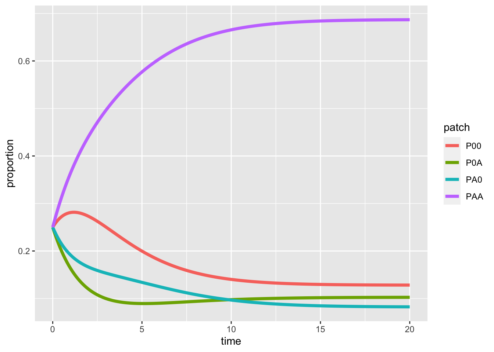

Week 6 - Metapopulations and patch occupancy models
Plants can condition nearby soil microbial communities, which will in turn influence the performance of subsequent colonizing plants. The soil beneath plant communities are therefore a mosaic with different cultivation histories. Po-Ju wants to understand how plant demographic rates (i.e., colonization and mortality rate) and microbial dynamics (i.e., the conditioning and decay rate of microbial communities) affect the percentage of different soil types in natural forests. As a starting point, Po-Ju builds a one-species patch occupancy model to track the dynamics of different types of plant-soil combination.
In this model, he characterizes sites by their plant-soil microbe state, using the notation \(P_{ij}\) to indicate sites that are now occupied by plant species \(i\) but have soil microbes state \(j\). Here, as a single species model, \(i\) can be 0 or \(A\), representing uncolonized sites or sites colonized by plant \(A\), respectively. Similarly, \(j\) can be 0 or \(A\), indicating sites without recent plant conditioning history or sites conditioned by plant \(A\), respectively. In summary:
- \(P_{00}\) represents uncolonized and unconditioned sites
- \(P_{A0}\) represents cites colonized by plant \(A\) but the soil is yet to be conditioned
- \(P_{AA}\) represents plant \(A\) colonizing a site with plant-\(A\)-specific microbial community
- \(P_{0A}\) represents sites that are currently unoccupied but have soil microbes that were associated with plant \(A\)
At the landscape scale, \(P_{ij}\) represents the proportion of sites belonging to a particular plant-soil microbe state, and its dynamics, \(\frac {dP_{ij}}{dt}\), summarizes the processes of plant colonization and death. The transitions between different plant-soil microbe states can be described by the following figure.

Here, \(P_{00}\) can be colonized by plant \(A\) when propagules arrive (per capita rate \(r_{A}\)), transitioning the state from \(P_{00}\) to \(P_{A0}\). Plants may die, with rate \(m_{A}\), before conditioning the soil (i.e., transition from \(P_{A0}\) back to \(P_{00}\)), or may successfully condition the soil with rate \(c_{A}\) (i.e., transition from \(P_{A0}\) to \(P_{AA}\)). After plants within the state \(P_{AA}\) die, a site with microbial legacy is left behind, denoted as \(P_{0A}\). These empty sites can be recolonized (i.e., transition from \(P_{0A}\) back to \(P_{AA}\)) with rates affected by the microbial legacy effect, \(\alpha\). Finally, the microbial community within the soil may decay to unconditioned state with rate \(d_{A}\), transitioning the state from \(P_{0A}\) to \(P_{00}\).
In this lab, we are going to model the dynamics of this plant-soil system. We will start by converting the flow diagram into a set of differential equations and then solve them numerically using the package deSolve.
library(deSolve)
library(ggplot2)
library(tidyr)
### Model specification
PSF <- function(times, state, parms) {
with(as.list(c(state, parms)), {
dP00_dt = P0A*dA + PA0*mA - P00*(PA0 + PAA)*rA
dPA0_dt = P00*(PA0 + PAA)*rA - PA0*mA - PA0*cA
dPAA_dt = PA0*cA - PAA*mA + P0A*(PA0 + PAA)*rA*alpha
dP0A_dt = PAA*mA - P0A*(PA0 + PAA)*rA*alpha - P0A*dA
return(list(c(dP00_dt, dPA0_dt, dPAA_dt, dP0A_dt)))
})
}
### Model parameters
times <- seq(0, 20, by = 0.1)
state <- c(P00 = 0.25, PA0 = 0.25, PAA = 0.25, P0A = 0.25)
parms <- c(rA = 0.5, mA = 0.1, cA = 0.5, dA = 0.4, alpha = 0.7)
### ODE solver
pop_size <- ode(func = PSF, times = times, y = state, parms = parms)
# take a look at the results
head(pop_size)## time P00 PA0 PAA P0A
## [1,] 0.0 0.2500000 0.2500000 0.2500000 0.2500000
## [2,] 0.1 0.2558649 0.2416153 0.2640144 0.2385055
## [3,] 0.2 0.2609930 0.2339241 0.2773399 0.2277430
## [4,] 0.3 0.2654349 0.2268709 0.2900255 0.2176687
## [5,] 0.4 0.2692386 0.2204039 0.3021162 0.2082413
## [6,] 0.5 0.2724484 0.2144756 0.3136533 0.1994227## time P00 PA0 PAA P0A
## [196,] 19.5 0.1283001 0.08252532 0.6866677 0.1025070
## [197,] 19.6 0.1282914 0.08250852 0.6866865 0.1025136
## [198,] 19.7 0.1282832 0.08249240 0.6867045 0.1025199
## [199,] 19.8 0.1282754 0.08247693 0.6867217 0.1025260
## [200,] 19.9 0.1282679 0.08246208 0.6867382 0.1025319
## [201,] 20.0 0.1282608 0.08244784 0.6867539 0.1025375### Visualization I
pop_size %>%
as.data.frame() %>%
gather(key = "patch", value = "proportion", -time) %>%
ggplot(aes(x = time, y = proportion, color = patch)) +
geom_line(size = 1.5)
### Visualization II
plot(range(times), c(0,1), type = "n", xlab = "time", ylab = "proportion")
lines(P00 ~ time, data = pop_size, col = "tomato")
lines(P0A ~ time, data = pop_size, col = "navy")
lines(PA0 ~ time, data = pop_size, col = "gray")
lines(PAA ~ time, data = pop_size, col = "orange")
legend("topleft", legend = c("P00", "P0A", "PA0", "PAA"), col = c("tomato", "navy", "gray", "orange"), lty = 1)